De assistent gebruiken in het werk
De Boswachter Assistent helpt je bij bezoekersgesprekken in Planken Wambuis. Dat zijn ook Wolfheze en de Wolfhezerheide, Mossel en het Mosselse Zand, Oud en Nieuw Reemst, de Buunderkamp en het Oude Hout. Je stelt een vraag in gewone taal en krijgt een antwoord met achtergrond en gesprekstips. Gebruik hem om je voor te bereiden, iets op te zoeken of inspiratie op te doen. Je eigen kennis en die van je collega's blijven leidend.
Van de beheerder krijg je een persoonlijke link, via mail of WhatsApp. Open die link één keer op elk apparaat dat je gebruikt. Daarna blijf je ingelogd.
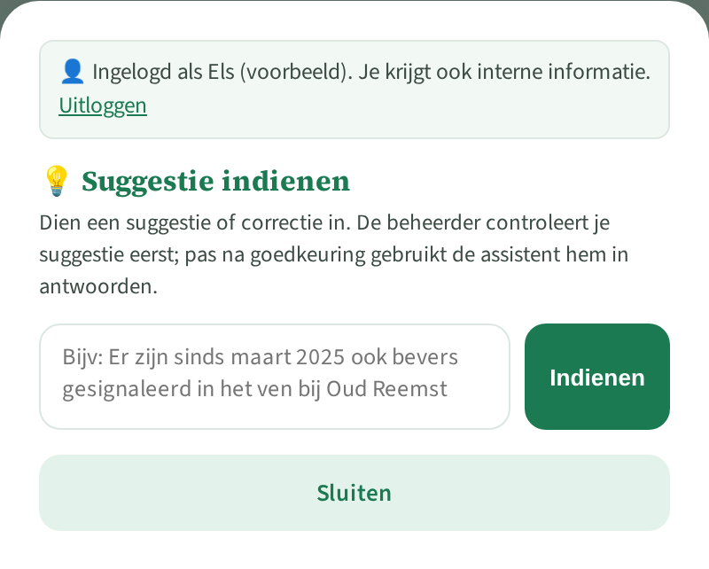
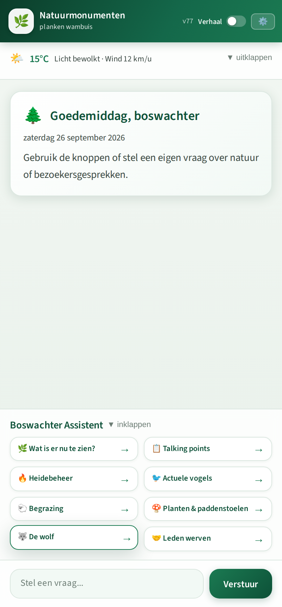
Een antwoord begint met een korte inleiding. Daarna volgen kopjes per onderwerp, en vaak gesprekstips. Het antwoord is zo lang als nodig: kort als er weinig bekend is, uitgebreider als de kennisbank veel biedt. Zo herken je waar de informatie vandaan komt:
| Wat je ziet | Wat het betekent |
|---|---|
| Voetnoot 1 met 📚 Kennisbank in de bronnenlijst | Een feit uit de kennisbank dat een beheerder heeft gecontroleerd. De bronnenlijst toont onderwerp, deelgebied, controledatum en de oorspronkelijke bron. |
| mogelijk verouderd | Het feit is een tijd niet gecontroleerd. Waarschijnlijk klopt het nog, maar controleer het bij twijfel. |
| Voetnoot met 🔎 website in de bronnenlijst | Gevonden op een toegestane website, maar niet gecontroleerd door een boswachter. De bron en de datum staan erbij. |
| Blok 🔎 Van website · niet gecontroleerd | Een aanvulling die de assistent nog zoekt terwijl jij het antwoord leest. De links staan onder Bronnen aanvulling. Vindt hij niets, dan verschijnt er geen blok. |
| Tekst zonder voetnoot | Algemene natuurkennis (hoe een soort leeft, hoe begrazing werkt), een samenvatting of een gesprekstip. Een feit over het gebied zelf hoort altijd een voetnoot te hebben. Zie je er een zonder? Meld het. |
| "Dat weet ik niet" | Het staat niet in de kennisbank en niet op de toegestane websites. De assistent gokt niet en verwijst naar de boswachter of natuurmonumenten.nl. |
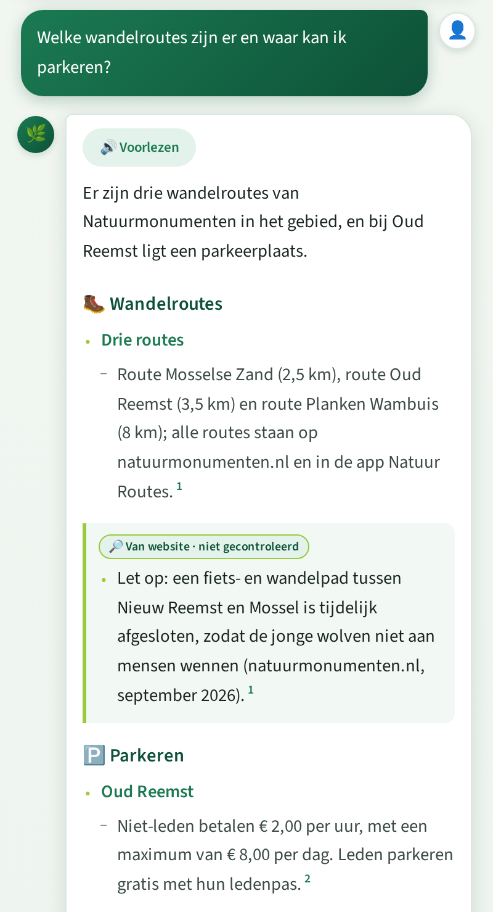
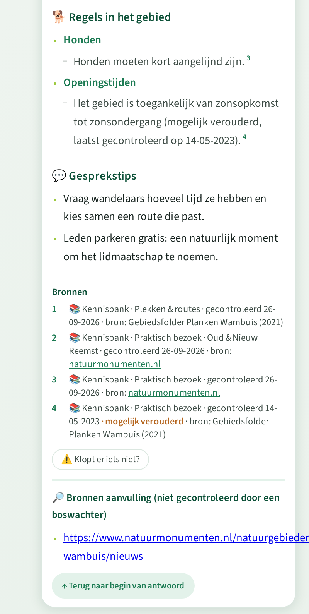
Deze maatregelen maken fouten veel minder waarschijnlijk, maar niet onmogelijk. Een feit kan bijvoorbeeld onhandig worden samengevat. Controleer belangrijke of verrassende feiten via de voetnoot voordat je ze aan bezoekers vertelt. Zie je een fout, meld die dan: zo wordt de assistent voor iedereen beter.
Het aantal boommarters in het gebied staat niet in de kennisbank. De assistent zegt dat eerlijk en verwijst door. Daarna geeft hij wat wél bekend is, met voetnoot, en algemene kennis over de soort, zonder voetnoot.
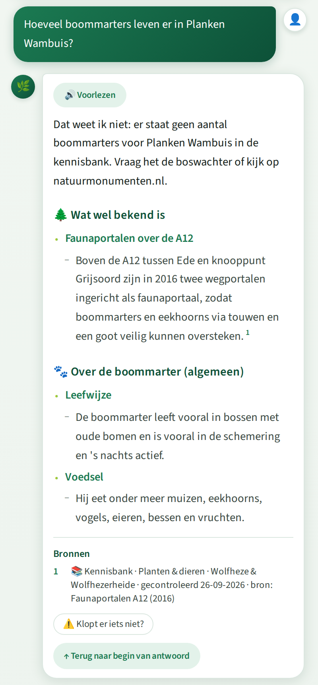
De beheerder ziet je melding samen met je vraag, het antwoord en de gebruikte feiten. Je naam wordt niet meegestuurd.
Heb je nieuwe informatie die los staat van een antwoord? Bijvoorbeeld een gewijzigde route of een nieuwe afspraak. Open dan ⚙️, typ je suggestie en tik op Indienen.
De beheerder beoordeelt elke melding en suggestie. Pas na goedkeuring komt de informatie in de kennisbank en gebruikt de assistent die. Een fout feit kan de beheerder direct uit de antwoorden halen.
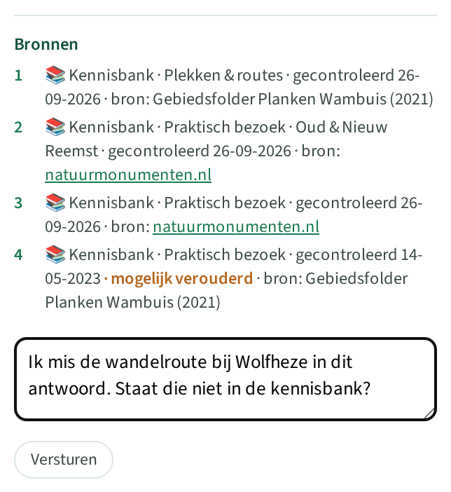
Wat je kunt aanpassen, en waar
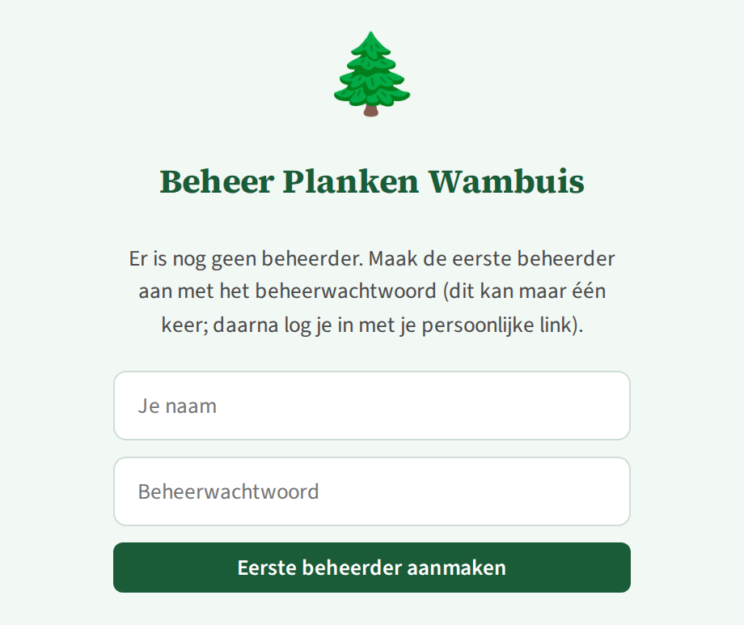
Hier zie je in één oogopslag wat er te doen is: voorstellen die wachten, meldingen "klopt niet", feiten die mogelijk verouderd zijn, het aantal actieve feiten en tijdelijke feiten die zijn afgelopen. Klik op een teller om naar de lijst te gaan. Onderaan staat het resultaat van de laatste wekelijkse controle van natuurmonumenten.nl en de laatste back-up.
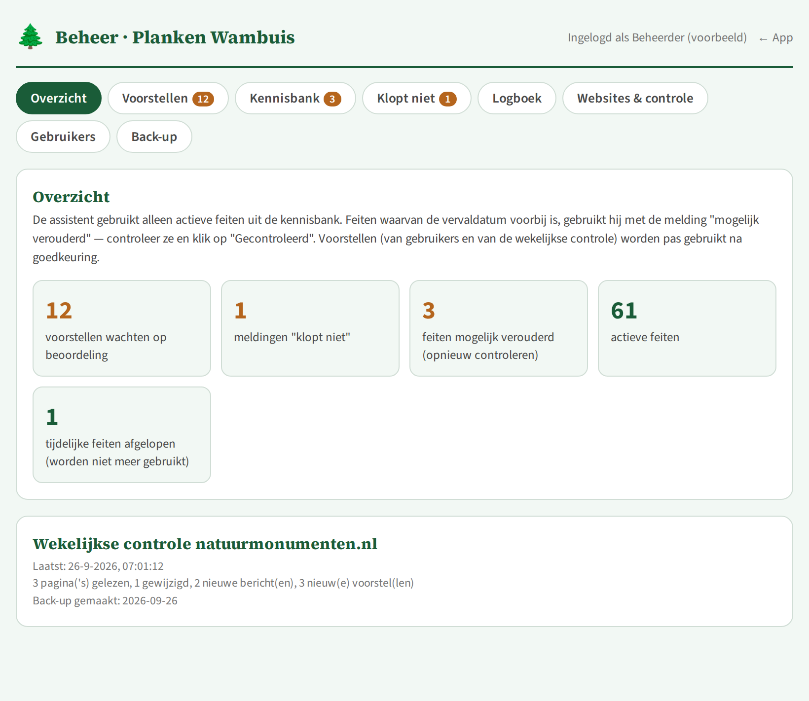
Alles wat nog niet in de kennisbank staat, komt hier binnen. Het groene label toont de herkomst: Wekelijkse controle nm.nl Suggestie gebruiker Melding "klopt niet" Uit document Voorstel assistent.
Bij Wijziging bestaand feit zie je in oranje het huidige feit. Keur je de wijziging goed, dan vervangt die het oude feit. De oude tekst blijft in de historie.
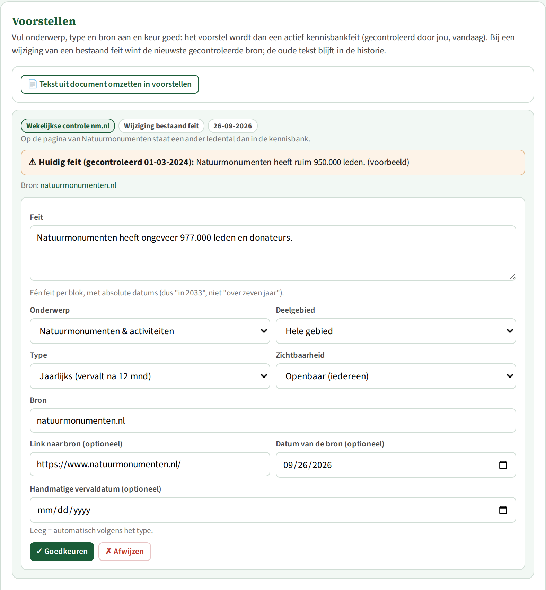
Gebruik dit voor documenten uit Kiek of uit de bronnenmap. Klik op Tekst uit document omzetten in voorstellen. Vul de naam van het document in (die wordt de bron) en eventueel een link en datum. Kies de zichtbaarheid: intern voor Kiek-documenten. Plak de tekst en klik op Omzetten in voorstellen. De assistent haalt de feiten over het gebied eruit en zet ze klaar als voorstel. Lange documenten worden in delen verwerkt, ongeveer een halve minuut per deel. Controleer daarna elk voorstel.
| Type | Waarvoor | Houdbaarheid |
|---|---|---|
| Vast | Naam, historie, ligging, landschap | 3 jaar |
| Jaarlijks | Aantallen (roedel, kuddes), ledental, prijzen, regels | 12 maanden |
| Seizoen | Wat er in bepaalde maanden te zien of te doen is; vink de maanden aan | Wordt gebruikt in die maanden en de maand ervoor |
| Tijdelijk | Afsluitingen, omleidingen, activiteiten; einddatum verplicht | Tot de einddatum, daarna niet meer gebruikt |
Met Handmatige vervaldatum kun je zelf een andere datum kiezen. Is de termijn voorbij, dan gebruikt de assistent het feit nog wel, maar met "mogelijk verouderd" erbij.
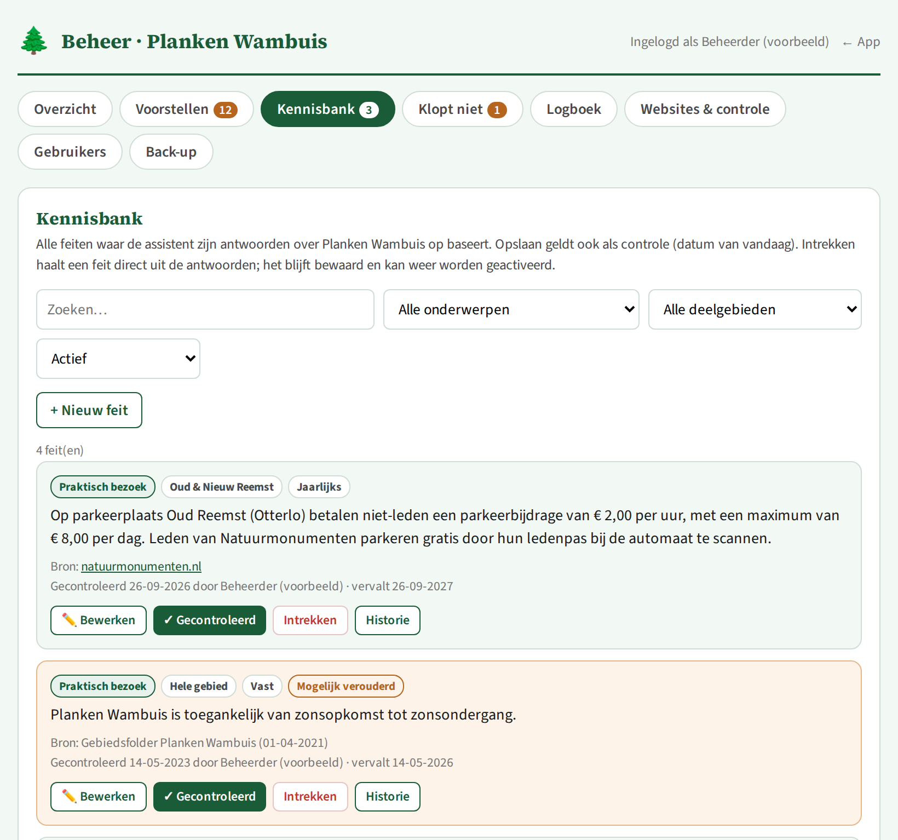
Hier staan alle feiten waarop de assistent zijn antwoorden baseert. Met het zoekvak en de filters vind je snel wat je zoekt. Je kunt filteren op onderwerp, deelgebied en status: actief, mogelijk verouderd, tijdelijk afgelopen, intern, ingetrokken of alle. Een oranje kaart is mogelijk verouderd.
| Knop | Wat hij doet |
|---|---|
| + Nieuw feit | Zelf een feit toevoegen, met hetzelfde formulier als bij voorstellen. |
| ✏️ Bewerken | Het feit aanpassen. Opslaan telt ook als controle, met de datum van vandaag. |
| ✓ Gecontroleerd | Het feit klopt nog. De controledatum wordt vandaag en de termijn begint opnieuw. |
| Intrekken | Haalt het feit direct uit de antwoorden, eventueel met een reden. Het blijft bewaard. |
| Heractiveren | Een ingetrokken feit weer in gebruik nemen. |
| Historie | Wie wat wanneer heeft gedaan, inclusief oude teksten. |
Hier komen de meldingen van gebruikers binnen, met de vraag, het antwoord (Antwoord tonen) en de gebruikte kennisbankfeiten. Klopt de melding? Klik dan op → Maak voorstel: je legt het juiste feit vast via het tabblad Voorstellen. Staat er een fout feit in de kennisbank? Trek het in bij Kennisbank. Is er niets te doen, klik dan op ✓ Afgehandeld.
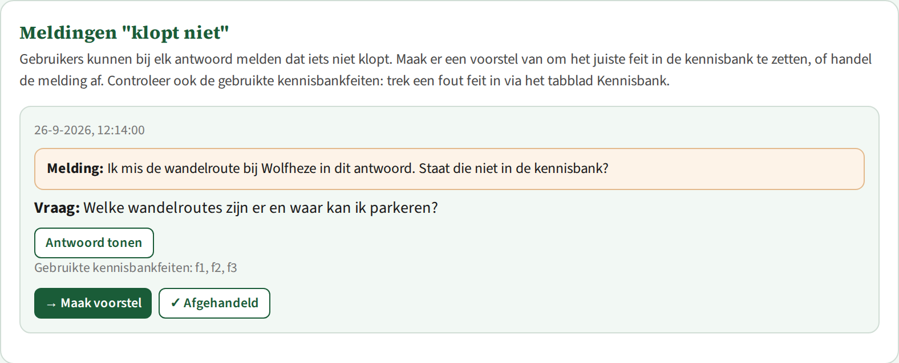
Hier staan alle vragen en antwoorden van de afgelopen 90 dagen, zonder persoonsgegevens. Je ziet alleen of iemand niet ingelogd was, gebruiker of beheerder. De labels tonen hoeveel kennisbankfeiten er zijn gebruikt, of er websites zijn gebruikt (oranje) en of de verhaalmodus aan stond. Bovenaan staan het aantal vragen en de geschatte kosten over de laatste 30 dagen.
Steekproef: open elke week een paar antwoorden. Klopt het antwoord, en kloppen de gebruikte feiten? Leg fouten vast via Kennisbank of Voorstellen.
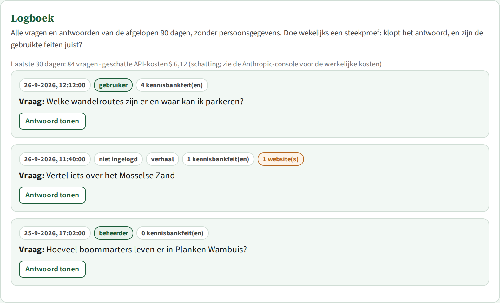
Toegestane websites. De assistent zoekt op internet alleen op deze websites, inclusief subdomeinen. Standaard zijn dat natuurmonumenten.nl, bij12.nl, gelderland.nl, ede.nl, rijksoverheid.nl, wolveninnederland.nl, sovon.nl, vogelbescherming.nl, vlinderstichting.nl, ravon.nl, zoogdiervereniging.nl, waarneming.nl, gld.nl, edestad.nl en barneveldsekrant.nl. Voeg een site toe of verwijder er een, en klik dan op Lijst opslaan.
Wekelijkse controle van natuurmonumenten.nl. Elke zaterdag om 07:00 leest de assistent de pagina's in de lijst. Wat nieuw of anders is dan de kennisbank, wordt een voorstel. Met Nu controleren start je de controle direct; dat duurt ongeveer een minuut.
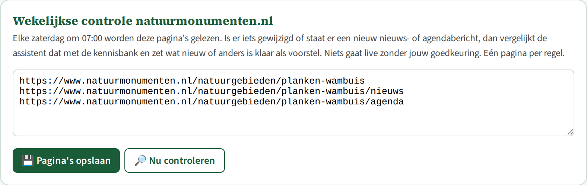
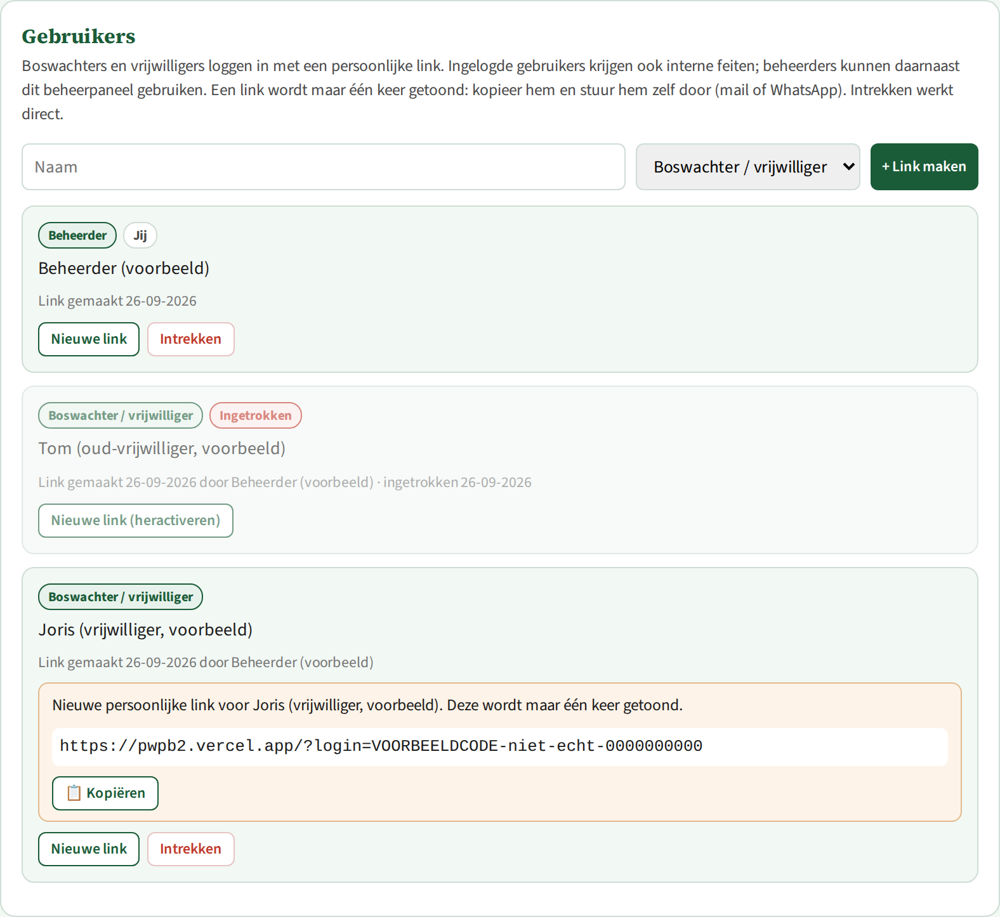
Elke zaterdag wordt automatisch een back-up gemaakt van de kennisbank, voorstellen, websites en gebruikers (zonder inlogcodes). Back-ups worden 10 weken bewaard. Met Download huidige stand bewaar je een kopie op je eigen computer; doe dat af en toe, bijvoorbeeld maandelijks. Met Terugzetten zet je de kennisbank, voorstellen en websites terug naar een eerdere stand. De huidige stand wordt dan eerst als back-up bewaard.
Opzet van de app en de keuzes achter het huidige ontwerp
main gaat automatisch live op pwpb2.vercel.app. Andere branches krijgen een afgeschermde preview.api/cron op zaterdag om 05:00 en 06:00 UTC. De functie draait alleen om 07:00 Nederlandse tijd, zodat zomer- en wintertijd kloppen. De taak controleert natuurmonumenten.nl, maakt een back-up en ruimt het logboek op.ANTHROPIC_API_KEY, KV_REST_API_URL, KV_REST_API_TOKEN, BEHEER_WACHTWOORD (alleen voor de eerste beheerder) en optioneel CRON_SECRET.docs/verbeterplan-betrouwbaarheid.md.api/chat.De wekelijkse controle en de documentimport gebruiken Claude met een vast antwoordformaat (structured output). Wat nieuw of anders is ten opzichte van de kennisbank, wordt een voorstel. Er gaat nooit direct iets naar de kennisbank.
| Keuze | Waarom |
|---|---|
| Kennisbank in de database, niet in de code | De repository is openbaar: interne informatie uit Kiek hoort daar niet in. Beheerders kunnen bovendien zelf wijzigen, zonder ontwikkelaar. |
| Losse feiten met bron, controledatum, type en zichtbaarheid | Elk feit is apart te controleren, te laten verlopen en in te trekken, met historie. |
| Citaties van de API in plaats van zelfgeschreven bronnen | Het model kan geen bron verzinnen: de voetnoot wijst naar het echte feit in de database. |
| "Weet ik niet" boven gokken; algemene natuurkennis mag wel | Juistheid over het gebied gaat voor volledigheid. Algemene kennis over soorten en beheer houdt de antwoorden bruikbaar, maar wordt nooit als gebiedsfeit gebracht. |
| Webzoeken alleen op een beheerbare lijst, apart gelabeld | De bronnen zijn betrouwbaar, maar niet door een mens gecontroleerd. Daarom staat er zichtbaar "niet gecontroleerd" bij. |
| Niets live zonder goedkeuring | Eén beheerder is eindverantwoordelijk. Fouten van automatische verwerking komen zo niet ongezien in antwoorden. |
| Houdbaarheid per type; verlopen geeft een waarschuwing, afgelopen tijdelijke feiten verdwijnen | Oude informatie wordt niet stilzwijgend als actueel gebracht, en goede informatie verdwijnt niet zomaar. |
| De nieuwste gecontroleerde bron wint | Eenduidig bij tegenspraak. Via de historie terug te draaien. |
| Persoonlijke links in plaats van wachtwoorden | Eenvoudig voor vrijwilligers en per persoon in te trekken. Alleen een hash van de code wordt opgeslagen. De beheerder deelt de links zelf, dus er is geen mailservice nodig. |
| Logboek 90 dagen, zonder persoonsgegevens | Maakt steekproeven en foutanalyse mogelijk en is privacyvriendelijk. |
| Geen vaste testset; direct live met steekproeven | Keuze van het team: de kwaliteit wordt in de praktijk bewaakt met steekproeven en "Klopt niet". |
| Claude Opus 5 met automatische terugval | Hoogste kwaliteit bij minder dan 500 vragen per maand, en de assistent blijft werken bij een storing. Prompt caching drukt de kosten; een maandplafond in de Anthropic-console begrenst ze. |
| Controle van nm.nl op zaterdag 07:00 | Het team is in het weekend actief. Eén keer per week is genoeg en scheelt kosten. |
| Wekelijkse back-up, 10 weken bewaard, plus download | Snel herstel na een fout in de kennisbank. |
| Bestand | Rol |
|---|---|
| index.html, sw.js, beheer.html | De app voor gebruikers (chat, voetnoten, bronnenlijst, "Klopt niet", inloggen met link) en het beheerpaneel |
| api/chat.js | Antwoorden in twee fasen, met citaties, toegestane websites en logboek |
| api/beheer.js, api/auth.js, api/feedback.js | Acties van het beheerpaneel, inloggen, meldingen en suggesties |
| api/cron.js, api/_lib/nmcheck.js | De wekelijkse taak en de controle van natuurmonumenten.nl |
| api/_lib/… | kennisbank.js (feiten en houdbaarheid), prompts.js (instructies voor het model), sites.js (standaardlijst websites), documentimport.js, auth.js (gebruikers en links), logboek.js, backup.js, kv.js (database) |